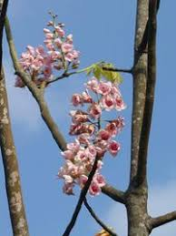

Akaniaceae
Turnipwood Family
Akaniaceae is a small family of flowering plants in the order Brassicales, consisting of just two genera, each with a single species: Akania bidwillii (Turnipwood) from eastern Australia and Bretschneidera sinensis from East and Southeast Asia. These are small to medium-sized trees characterized by large, pinnately compound leaves and showy flowers arranged in panicles or racemes.
Overview
The Akaniaceae family, as currently defined by the APG system, comprises only two species in two genera: Akania bidwillii, endemic to the subtropical and warm-temperate rainforests of eastern Australia, and Bretschneidera sinensis, found in montane forests of southern China, Taiwan, Vietnam, and Thailand. Due to their distinct morphologies and widely disjunct distribution, these two genera were sometimes placed in separate monotypic families (Akaniaceae sensu stricto and Bretschneideraceae) before molecular data confirmed their close relationship.
Both species are trees, with Akania being evergreen and Bretschneidera deciduous. They are notable for their very large, alternate, pinnately compound leaves which can reach nearly a meter in length. They produce attractive displays of pinkish or white flowers in large terminal or axillary clusters (panicles or racemes). Both species are relatively rare or uncommon in their native habitats and are occasionally cultivated as ornamentals in suitable climates.
The family belongs to the order Brassicales, which includes well-known families like Brassicaceae (mustards, cabbages) and Caricaceae (papaya). Like other members of the order, Akaniaceae produce glucosinolates (mustard oil glycosides).
Quick Facts
- Scientific Name: Akaniaceae
- Common Name: Turnipwood family (primarily for Akania)
- Number of Genera: 2 (Akania, Bretschneidera)
- Number of Species: 2 (Akania bidwillii, Bretschneidera sinensis)
- Distribution: Disjunct: Eastern Australia (Akania) and East/Southeast Asia (Bretschneidera)
- Evolutionary Group: Eudicots - Rosids - Brassicales
- Current Date: March 29, 2025
Key Characteristics
Growth Form and Habit
Small to medium-sized trees. Akania bidwillii is evergreen, while Bretschneidera sinensis is deciduous.
Leaves
Leaves are alternate, very large (up to 75-90 cm long), and pinnately compound (odd-pinnate) with numerous leaflets (up to 31 in Akania, 9-19 in Bretschneidera). Leaflets are typically oblong or lanceolate with serrated or toothed margins. Stipules are present: small and falling early (caducous) in Akania; larger, fused within the petiole (intrapetiolar) in Bretschneidera.
Inflorescence
Flowers are borne in large, many-flowered inflorescences. These are terminal or axillary panicles or racemes (Akania) or large terminal panicles (Bretschneidera).
Flowers
Flowers are typically bisexual, 5-merous, and showy (white, pinkish, or reddish). They are radially symmetrical (actinomorphic) in Akania or slightly bilaterally symmetrical (zygomorphic) in Bretschneidera.
- Calyx: 5 sepals, distinct or fused at the base.
- Corolla: 5 petals, distinct, often clawed at the base.
- Androecium: Stamens usually number 8 (Bretschneidera) or 8-10 (Akania). Filaments are distinct, sometimes hairy, and may arise from a nectar disc. Anthers dehisce via longitudinal slits.
- Gynoecium: A single superior ovary composed of 3 fused carpels (Bretschneidera) or 2-3 fused carpels (Akania). The ovary is typically stalked (borne on a gynophore) and has as many locules as carpels. Each locule contains 1 or 2 ovules on axile placentation. A single style terminates in a capitate or slightly lobed stigma.
Fruits and Seeds
The fruit is a dehiscent capsule. In Akania, it is dry, reddish, somewhat pear-shaped (pyriform), usually containing a single large seed. In Bretschneidera, it is an inflated, reddish, pear-shaped or top-shaped capsule opening by 3 valves, containing several large, red seeds.
Seeds are relatively large, with or without endosperm (Akania has endosperm, Bretschneidera lacks it). The embryo is large and straight or slightly curved.
Chemical Characteristics
As members of the Brassicales, both genera produce glucosinolates (mustard oil glycosides), although the specific types may differ. This chemical trait supports their placement within the order.
Field Identification
Identifying trees belonging to Akaniaceae relies on recognizing their distinctive large compound leaves, tree habit, showy flowers in large clusters, and specific fruit types, combined with their restricted geographic locations:
Primary Identification Features
- Habit: Small to medium-sized tree.
- Large Pinnately Compound Leaves: Alternate leaves composed of numerous leaflets (often >10).
- Serrated Leaflet Margins: Edges of leaflets are typically toothed.
- Showy Flowers in Large Inflorescences: White/pinkish flowers with 5 petals and 8(-10) stamens, arranged in prominent panicles or racemes.
- Capsule Fruit: Fruit is a dehiscent capsule, either dry and pear-shaped (Akania) or inflated and reddish (Bretschneidera).
- Geographic Location: Restricted to either Eastern Australia (Akania) or East/Southeast Asia (Bretschneidera).
Secondary Identification Features
- Stalked Ovary (Gynophore): Ovary raised on a short stalk within the flower (requires close look).
- Presence of Stipules: Small stipules may be visible at the leaf base (especially in Bretschneidera).
- Deciduous vs. Evergreen: Bretschneidera is deciduous; Akania is evergreen.
Seasonal Identification Tips
- Year-round: Identify by tree habit and the very large, alternate, pinnately compound leaves. Note evergreen (Akania) vs. deciduous (Bretschneidera) habit.
- Flowering Season: Spring to early summer. Look for the large terminal or axillary clusters of white or pinkish flowers.
- Fruiting Season: Summer to fall. Look for the distinctive capsules (reddish, pear-shaped in Akania; inflated, reddish in Bretschneidera).
Common Confusion Points
The large, pinnately compound leaves might cause confusion with trees from other families:
- Sapindaceae (Soapberry family): Includes trees/shrubs with often compound leaves (pinnate or palmate). Flowers are usually small, often unisexual, typically with 8 stamens, but fruit types are diverse (capsules, schizocarps, berries, drupes) and floral structure differs (e.g., presence of prominent disc).
- Meliaceae (Mahogany family): Trees/shrubs usually with alternate, pinnately compound leaves. Flowers typically have stamens fused into a tube (staminal tube), and fruit is often a capsule or drupe.
- Juglandaceae (Walnut family): Trees with large, alternate, pinnately compound leaves (often aromatic). Flowers are unisexual, typically in catkins (male) or small clusters (female), and fruit is a large drupe-like nut enclosed in a husk.
- Rutaceae (Citrus family): Some tree members have compound leaves (pinnate or trifoliate), often with pellucid dots (glands) and aromatic smell. Flowers usually have prominent discs and characteristic fruits (hesperidium, capsule, samara, drupe).
Distinction relies on the combination of features: tree habit, alternate odd-pinnate leaves, large inflorescences of 5-petaled flowers with 8(-10) stamens, stalked superior ovary, specific capsule types, and the geographic location.
Field Guide Quick Reference
Look For:
- Tree habit (Small/Medium)
- Large, alternate, odd-pinnate leaves
- Numerous serrated leaflets
- Large panicles/racemes of flowers
- Flowers: 5 petals, 8(-10) stamens
- Superior ovary on a stalk
- Capsule fruit (specific types)
- Location: E Australia or E/SE Asia
Key Variations (between the 2 species):
- Evergreen (Akania) vs. Deciduous (Bretschneidera)
- Flowers: Actinomorphic (Akania) vs. Zygomorphic (Bretschneidera)
- Stipules: Small/caducous (Akania) vs. Larger/intrapetiolar (Bretschneidera)
- Fruit: Dry 1-seeded capsule (Akania) vs. Inflated multi-seeded capsule (Bretschneidera)
- Seed: Endosperm present (Akania) vs. absent (Bretschneidera)
Notable Examples
The family comprises only two distinct species:

Akania bidwillii
Turnipwood / Blush Silky Oak
An evergreen tree native to rainforests of Queensland and New South Wales in eastern Australia. It features very large, glossy, pinnately compound leaves with numerous serrated leaflets. Produces fragrant pinkish-white flowers in axillary racemes or panicles, followed by reddish, pear-shaped, dry capsules usually containing one seed. The wood apparently smells like turnip when cut.

Bretschneidera sinensis
(No widely used English common name)
A deciduous tree found in montane forests across southern China, Taiwan, northern Vietnam, and Thailand. It bears large pinnate leaves and impressive terminal panicles of showy, fragrant, pinkish-white, slightly zygomorphic flowers that appear in spring often before or with the new leaves. The fruit is an inflated, reddish, pear-shaped or top-shaped capsule with several large red seeds.

Akania bidwillii (Fruit)
Turnipwood Fruit
The fruit of Akania bidwillii is a characteristic reddish, somewhat woody, pear-shaped capsule, typically around 2-3 cm long. It splits open loculicidally to release usually a single large seed.
Phylogeny and Classification
Akaniaceae is placed within the order Brassicales, a well-supported clade within the malvid lineage of rosid eudicots. This order is characterized by the production of glucosinolates (mustard oils) and includes families like Brassicaceae (mustards), Capparaceae (capers), Cleomaceae (spiderflowers), Caricaceae (papaya), and Tropaeolaceae (nasturtiums).
Molecular phylogenetic studies have robustly placed Akaniaceae (including Bretschneidera) within the Brassicales. Within the order, Akaniaceae is consistently found to be the sister group to the family Tropaeolaceae (which contains Tropaeolum, the nasturtiums). This Akaniaceae + Tropaeolaceae clade forms one of the basal lineages within the core Brassicales. The recognition of Akaniaceae and Bretschneideraceae as a single family (Akaniaceae sensu lato) is strongly supported by molecular evidence, despite their morphological differences and geographic separation.
Position in Plant Phylogeny
- Kingdom: Plantae
- Clade: Angiosperms (Flowering plants)
- Clade: Eudicots
- Clade: Rosids
- Clade: Malvids
- Order: Brassicales
- Family: Akaniaceae
Evolutionary Significance
Akaniaceae, despite its small size, offers valuable evolutionary insights:
- Basal Brassicales Lineage: Represents an early diverging lineage within the Brassicales, retaining some features (like tree habit, large compound leaves) less common in derived families like Brassicaceae.
- Biogeography: The striking disjunction between Australia (Akania) and Asia (Bretschneidera) points to a likely wider past distribution and subsequent extinction or vicariance events, possibly related to continental drift and climate change (perhaps originating in Gondwana).
- Morphological Divergence: The significant morphological differences between Akania and Bretschneidera despite their close molecular relationship illustrate how evolution can shape distinct forms within a single family lineage over time.
- Link to Glucosinolate Evolution: As a basal member possessing glucosinolates, it contributes to understanding the origin and diversification of this key chemical defense system within the Brassicales.